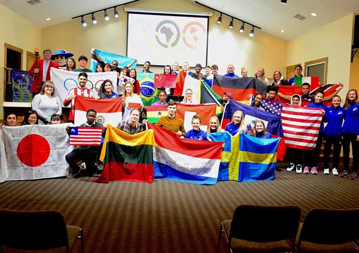
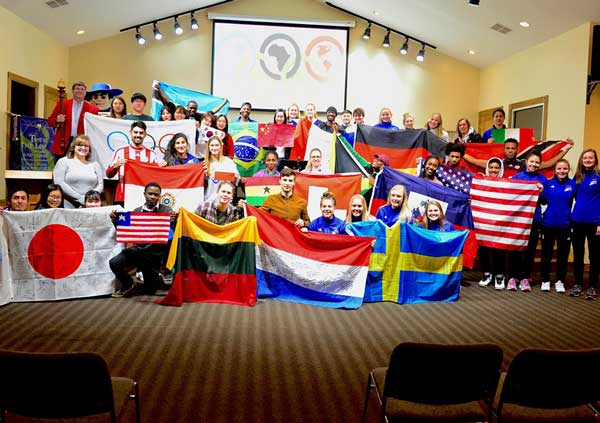

Joanne Kim
I am majoring in a field of media and cultural studies, that would lead to my career path. My ideal career would be to work in part of the entertainment industry because growing up, I have been exposed to online media and have been fascinated by the development and advancement in new technologies. I am wanting to pursue my career in this field and obtain the growth of an industrial level. I have always been passionate in arts and design; growing up I loved painting, drawing, and designing. In high school I got the opportunity to take a class of drawing as an elective. I am the type of person that is heavily influenced by the media such as Youtube, Netflix, Instagram, etc, and this made me realize my passion for the entertainment industry, culture, and media. Some personal experiences that I have through extracurricular and volunteer activities include: Brea Olinda High School (Graduate June 2021), Fullerton Sister City (Chinese exchange student program) (August 2018), Holy Faith Home Society (Water Living School) (April 2020), Key Club, Brea Olinda High School (August 2017), Korean Culture Club, Brea Olinda High School (2019-2021), Book Sharing Club (April 2020), Anseong, Brea Sister City (2018-2019), Kpop Dance Club (2018-2019),Brea Jaggo Club (2020-2021).
During high school I participated in clubs and even took some leadership positions to widen my personal experiences to learn and grow. Some positions I took included being Vice President from the Book Sharing club, which was a school club that connected with the Holy Faith Home Society non profit organization. Where I took part in interacting with associates from India to fundraise and ship books to children that are in poverty due to the environment. I remember I used the sources of media to advertise, interact, and communicate with people around me and in higher positions. It was a great experience, and I remember fundraising up to one thousand dollars to ship to India. I also took a position in the Korean Culture club as publicity and administrator to help out with the Anseong, Brea Sister City organization. Which is a program for international students that come visit the United States to experience going to an American School. I participated in this program for all four years and enjoyed communicating, learning, and also bonding with people from different cultures and backgrounds. Brea Jaggo Club is an organization dedicated to uplifting women from societal issues. Some controversial issues our club held were topics about domestic violence, body shaming, women homelessness, gender gaps, and etc. In this club we would discuss, research, and have guest speakers to share experiences and learn to uplift and re-learn about the societal problems that should be shared and prevented. In conclusion, I believe that these personal experiences shape who you are and are a great opportunity for individuals to obtain knowledge and benefits for your future. I believe some of the things I learned will help me in the professional field as I strive for my career path.
In conclusion, I believe that these personal experiences shape who you are and are a great opportunity for individuals to obtain knowledge and benefits for your future. I believe some of the things I learned will help me in the professional field as I strive for my career path.
Experience
Developer
• Book Sharing Club (Holy Faith Home Society)(vice president) X
• Korean Culture Club (publicity and administrator)
• Brea Jaggo Club (member)
Teaching Assistant
• Ran sessions to help students learn how to code
• Reviewed and graded student coding projects
• Created educational content to help promote student education
• TA'd for over 400 students each academic quarter
Education
UC Riverside
University of California Riverside
University of California Riverside
Portfolio


